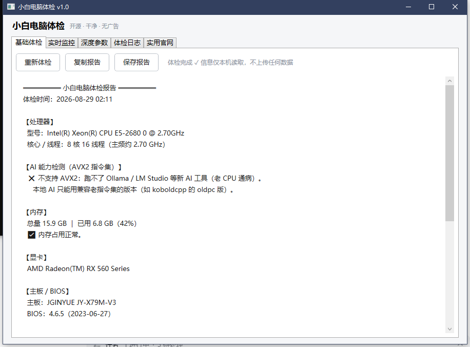
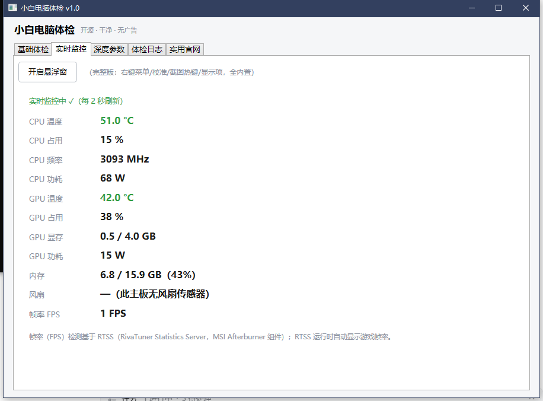
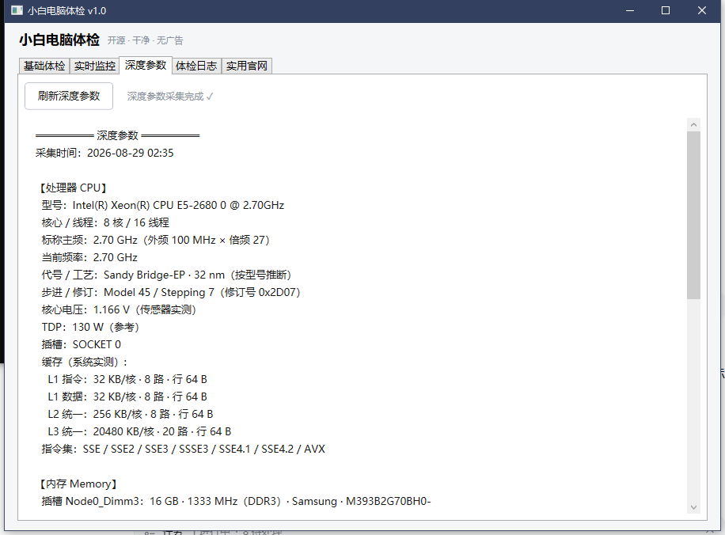
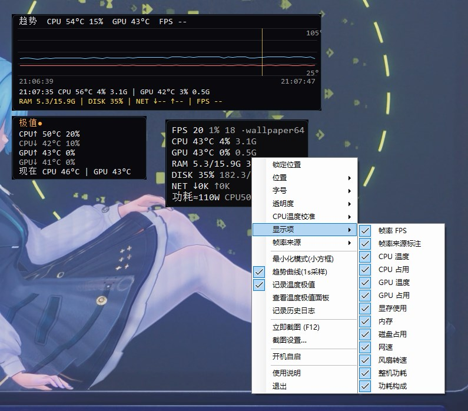

硬件总览（CPU/内存/显卡/主板/BIOS）+ AVX2 检测 + 磁盘体检 + 健康小结，一键复制/保存报告。
CPU/GPU 温度·占用·频率·功耗、显存、内存、风扇、FPS（RTSS），每 2 秒刷新，温度高自动变红；Xeon E5 v1 自动校准 -11°C。
CPU/内存/显卡/主板关键规格一屏看全：L1/L2/L3 全缓存实测、代号/工艺按型号推断、外频×倍频、指令集、内存条详情、显卡规格库。
无边框置顶小窗：锁定/位置/字号/透明度/温度校准/截图热键/功耗估算/开机自启。
历史体检记录自动保存，清除时自动备份 .bak，不怕误删。
驱动下载/检测跑分/装机软件/社区 4 组 21 站常用入口，一键直达。

基础体检

实时监控

深度参数
如果你只需要游戏/工作时随时瞄一眼的置顶小窗（CPU/GPU 温度、占用、频率、内存、FPS），不需要体检、深度参数这些页面——直接下载独立浮窗版：更轻、启动快、专注一件事。

置顶悬浮窗 · 悬浮在任意界面之上（深色半透明）
🛠️ 浮窗源码已开源（MIT）：github.com/LinLVEO/hardware-monitor · 数据接口 http://127.0.0.1:8080/api/data 可给其它程序读取
说明：PcCheck 一体版内置同款悬浮窗（含体检/监控/深度参数/日志/官网）；独立浮窗版只做悬浮窗一个功能。两者数据同源（LibreHardwareMonitor + RTSS）。
需要管理员权限：读取 CPU 温度/功耗需要访问硬件底层（ring0 驱动，来自 LibreHardwareMonitor 库），启动会弹 UAC 确认——属正常现象，不是病毒。
杀软误报：WinRing0 系驱动是杀软常见误报对象，Windows Defender 可能报“风险驱动/潜在威胁”——属误报。本工具只读本机传感器，不上传任何数据，无任何网络通信，源码全部公开可审计。
SmartScreen：未购买商业签名证书，首次运行可能弹“Windows 已保护你的电脑”，点“更多信息 → 仍要运行”即可。
源码在 github.com/LinLVEO/pc-check · 遇到问题欢迎提 Issue · 使用 dotnet publish PcCheck.csproj -c Release -r win-x64 --self-contained true -p:PublishSingleFile=true -o 发布 自行构建